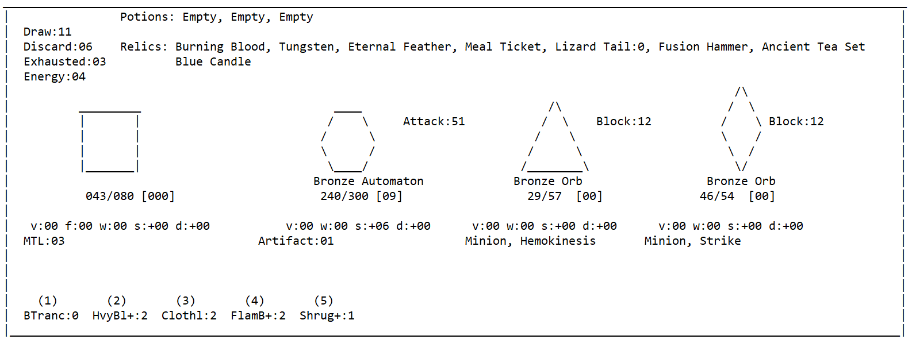
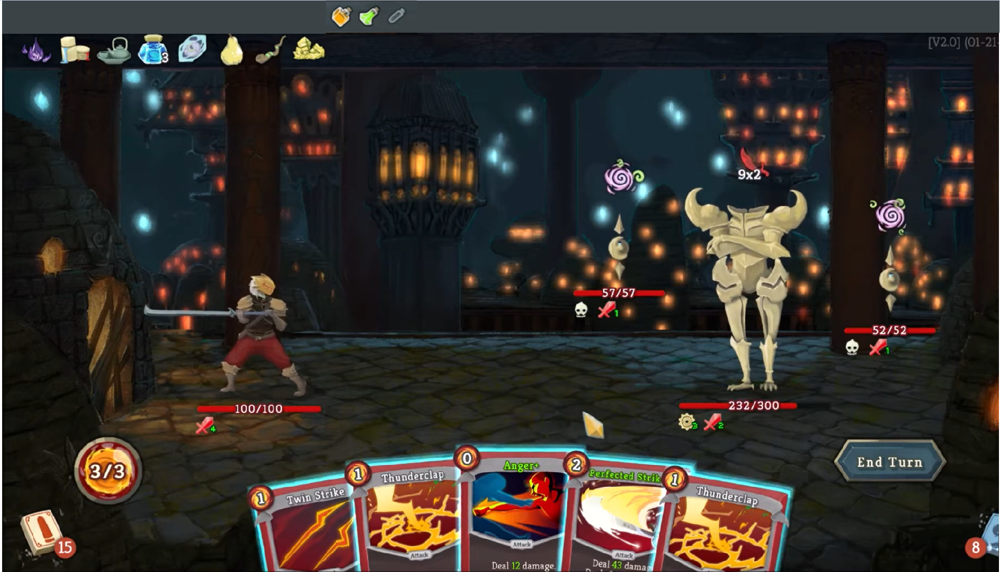

SLAY THE SPIRE RECREATION - C++
You can also read a similar write-up of the project on github .
Project Overview:
For this project, I created a C++ replica of Slay the Spire, a popular roguelike deckbuilder. The replica is as close to a 1:1 recreation of the game as is feasible, and currently consists of all 4 acts, and the full experience for the first character, Ironclad. The game was originally designed to allow a user to interact with, and play through the full game. However it evolved into a Deep Reinforcement Learning (RL) project using multiple TensorFlow models to autonomously learn, play and win the game. As the sole contributor to this project, I was responsible for the design, development and testing of the game and used only the Wiki, and my knowledge from playing the game to build it. The goal was to design the game without influence or knowledge of the game's code.
See Reinforcement Learning part of the project
Slay the Spire:
For those unfamiliar with the game, Slay the Spire is a card game where you attempt to climb 50 floors, separated into 3 acts, of varying events (with an additional short 4th act). The player aims to acquire cards, relics (unique items to help the player in and out of fights) and potions (one time use, primarily used to help in fights) while not dying on their journey up the spire. You encounter random events, campfires to heal or upgrade cards, shops to spend gold and acquire resources, but most frequently fight enemies. Enemies will either be in traditional hallway fights, more difficult elite fights, or a boss enemy at the end of each act. Fights can be boiled down to a card game where your character faces the enemies. By playing cards using energy, you attempt to deal damage to them, or mitigate damage dealt to you. Each fight ends with either your death, and the loss of the run, or the enemies defeated and the offering of various rewards as you continue on. Computational performance was always a priority over impressive visuals so the project was kept as a text-based recreation as shown below.
 Technical Design:
The use of the observer design pattern permeates the entire codebase, appearing frequently to facilitate the triggers and effects of cards, relics and potions. Certain classes need to observe several events and therefore hold and manage a set of templated observers. The 'gamestate' and 'all_pc_info' classes are both singleton classes and are used to store caches for frequently calculated values, hold databases from which to clone items and contain all the unique game and player information, respectively. This is a highly object-oriented focused project with multiple inheritance structures.
Challenges and Solutions:
One of the main challenges was inferring the nature of the design for some of the more unintuitive and complex mechanics in the game. Managing the ordering of observer triggers when cards are played from the top of the deck and duplicated required a few iterations of design to hone a proper solution. Also, recreating the procedural map generation was a non-trivial exercise given the edge cases which require unique handling thanks to the stipulations on each map node.
Real Slay the Spire map flanked by sample of randomly generated replica maps following the same rules.
Testing and Debugging:
There was a necessity for a system to randomly generate decks and iterate through every fight with all permutations of relics, cards and potions to train the fight AI. This coincided with a need to rigorously test for bugs in all edge cases. In unison with an intuition for the more complex interactions in the game, manual testing and checking old patch notes for bugs previously present in the game, testing was handled well.
Project Outcomes:
Successfully recreated Slay the Spire. Fully playable from start to finish, well-designed and scalable such that the other class characters could be added without too much difficulty. Runs well and efficiently, visuals are sufficient for functionality. (In terms of runtime performance bottlenecks, the overwhelming majority is spent calling and training the RL models, the running of the game itself is negligible in comparison.)
Conclusion:
This project showcased my technical expertise in C++ programming, and software design. It also highlighted my ability to work independently, manage complex projects, and solve technical challenges.